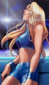
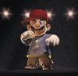
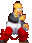

De: La Frikipedia, la enciclopedia extremadamente seria.
De: La Frikipedia, la enciclopedia extremadamente seria. De: La Frikipedia, la enciclopedia extremadamente seria.
Super Smash Bros es un juego de GameCube, la historia del cual es la misma que la del clásico juego del Pacman (ninguna).
Este juego fue creado para que los frikis y las personas comunes se entretengan partiéndole el culo a sus amigos y fue tan bueno que le crearon una parte anterios y una secuela aún más violenta y más poderosa que la de sus antecesor.
Aquí se exponen algunos de los personajes del juego y sus características.
Cabe destacar que hablándose de la serie en general de estos juegos de pilia, nombramos a los personajes relevantes que aparecen en la serie de estos juegos:
| Personaje | Descripción |
|---|---|
 Dr. Mario |
Un pastillero, heroinómano, cocainómano, y todo lo acabado en nómano. Este tío sabe menos de medicina que mi perro, y a lo que verdaderamente se dedica, es a drogarte y extraerte los órganos para venderlos o autoimplantarselos. Además lanza pastillas tope de tochas que no se sabe de dónde c@@#* salen. Por si fuera poco, cuando vas a atacarle para que no te extraiga ese riñón que tanto te ha costado estropear, va y te da un capazo del quince que te deja mirando pa cuenca y muy mareado, para después hacerte una hiper-mega lavativa y enviarte al quinto pino. |
|  | Típica rubia de bote. Cuando descubrió su parecido con Ana Obregón decidió meterse en una armadura de metal que la hiciera confundirla con un tío. De este modo, empezó a currar como cazarrecompensas para poder pagarse la cirugía. Cuando al fin recaudó suficiente pasta para poder operarse, no pudo quitarse la armadura, ya que ésta ahora formaba parte de su cuerpo. Es también conocida con el nombre de Motera del Espacio, o Fabrica de Misiles.
Samus seguramente es el personaje más imba que hay. Es casi imposible sacarle del escenario gracias a bombas que explotan e inexplicablemente le hacen rebotar y ganchos de energía. En combate cuerpo a cuerpo es capaz de realizar cargas, patadas en la boca, quemadura de pies, caponazos con un cañon de media tonelada, Etece, pero tampoco te alejes mucho por que lo más probable es que termines viendo como una Genkidama se te acerca inevitablemente acompañada de un par de misiles. En definitiva, lo mejor que te puedes encontrar si has tenido un duro día y quieres acabar rápido con tu vida. |
| Esta tipa es una p%$* princesa esquizofrénica y sedienta de sangre que se ha cansado de que la rapten siempre y ha decidido aprender a lanzar cargas electromagnéticas contra sus enemigos, (Vamos, lo que se suele aprender en estos casos), lo mas j&%&&& de esta princesita es su puñetera manía de cambiar de traje y convertirse en una especie de guerrera ninja llamada Sheik, que antes de que te des cuenta ya te ha lanzado un montón de shuriken, se ha puesto detrás de ti, te ha zurrado de mala manera y te ha metido una cadena por el culo. Cuando esta simpatica chica sale despedida del escenario, no pasa nada, porque entonces se vuelve a transformar en princesa toca pelotas y como si nada hubiera pasado, vuelve al escenario teletransportándose, y a causa de su doble personalidad no recuerda lo que ha hecho antes. | |
|  | Este es Doctor Mario antes de empezar a estudiar medicina.En lo único que cambia en sus años de juventud es que tenía un curro de fontanero y no conocía la existencia de las toxopastillas y en vez de eso lanzaba bolas de fuego como quien tira un bolo. Tambien tuvo que canviar su inexplicable habilidad de volverse un gigante, debido a que con ese tamaño no tenia fuerza suficiente para mover su cuerpo. |
| Este tio es un zorro (literalmente). Este canino es el capitan de una patrulla espacial (Creiais que el ser humano es el mas avanzado? Pues esta claro que no). Junto a su compañera la rana Gustavo que ahora se hace llamar Slippy, Falco, ques es el tio chungo del grupo, un puñetero conejo que esta pendiente de que lo jubilen y no recuerdo como se llama y para terminar un tio llamado Jefe, forman el nuevo grupo de los teleñecos. En el juego tiene dos formas de juego: La de pro, en la que se vuelve loco y con su pistola laser la dispara como si fuera la super Shocker esa que dispara por detrás, salta, vuelve a saltar, pega, vuelve a saltar, con su escudo te rebota un ataque que nunca lanzaste y misteriosamente pone en la pantalla que el es ganador. Eso o la forma noob en la que basta que bufen para echarte del escenario. | |
| Falco | Es el compañero de equipo de Fox. Es el tipico tio serio y duro el cual se pasará a los malos de turno y luego volverá con los buenos (previsible). Es un clon de Fox...¿o era al reves?...Bueno, da igual. La cuestión es que este tío hace exactamente lo mismo que Fox, solo que todo más lento pero más fuerte, lo que da como resultado que sólo pueda adquirir el modo n00b con un peso de caida añadido. |
| Es el hermano de Mario, se le ve a la legua sus tendencias metrosexuales, vasta con ver su golpe Tai-Chi, aunque prefiero no verlo ya que suele significar una importante perdida de vida del que lo recibe, en este caso yo. Otro ejemplo es la embestida con molinete, la qual da mas risa que otra cosa. Al igual que su hermano no conoce las pildoras toxas aun y lanza bolas de fuego...¿Verde?...Sin comentarios. Ademas parce ser un pacifista ya tras ganar a alguien entra en una pequeña depresion. | |
| Nombre de origen cibernetico que viene a significar "unión entre dos paginas web". Link lleva siempre un gorro verde en la cabeza, el cual seguramente está pegado con cola loka ya que no se le cae ni cuando se sube al Dragon Khan. Tiene armas de lo más variadas. La principal es la espada. Antes de un combate se atiborra de pastillas para el mareo, ya que inevitablemente, durante una batalla acabará haciéndo unos 800 ataques que consisten en girar sobre sí mismo,y unas 5.000 volteretas (en tierra y aire) aproximadamente. Se cree que le robó unos cuarenta bolsillos mágicos a Doraemon, ya que es capaz de sacar bombas del tamaño de su cabeza de no se sabe dónde, un boomerang, un arco e infinitas flechas. Un estudio exhaustivo me llevó a la conclusión de que Link probablemente sea calvo, y el pelo rubio que le asoma bajo el sombrero será una especie de paja. Y esto podría suponer un buen motivo para no quitarse el sombrero ni a sol ni a sombra. También carga con un escudo la ho$@#* de grande, pero que casualmente no le molesta a la hora de moverse. El objetivo de Link es destruír a todo aquél que sea mas guay que él. No tiene amigos, ya que los ha matado a todos, y se supone que está enamorado de Zelda (son tal para cual). Link luce unos ropajes verdes para que resalte el azul de sus ojos. | |
| Este es el malo malote de los juegos de Zelda.¿Que porque se llaman los juegos Zelda si el prota es el Link? Ni idea por que la Zelda esta no sale casi o directamente no sale en depende que juegos. Ganondorf es un armario de 4 puertas con una espada gansa que el tonto solo saca al final del juego para bacilar. Sus aficiones son secuestrar a todas las tias que se encuentra Link y reirse.La verdad es que jugar contra este tio da miedo ya que suelta unas o$@#*s kon un humillo lila acojonantes y aunque debido al peso de sus pelotas va a 2km/h te mete las o$@#*s que ni las ves, eso si no lo cojas tu que entonces pasa a pillar los 1km/h.Ay a quien le sonrie la suerte. | |
| Es el petardo (y nunca mejor dicho) del grupo de personajes que forman el juego. Supuestamente es de un chico con poderes telequineticos que rara vez usa,le mola mucho mas la pirotecnia.La verdad es que no se de donde sale este pavo, segun nintendo es de un juego que no salio en España,pero eso es menos creible que los partidos de Oliber y Benji. El chico debio sufrir una triste infancia llena de maltratos, ya que ahora es un joven skin que pega a la gente con un bate,un yo-yo,electrocuta,lanza petardos...y muchas otras cosas, ademas va acompañado por un peluche al que llama Sr.Ton no se que.Si tuvo una infancia muy triste. | |
| Young Link |
Desde pequeño, Link ha sigo un chico con problemas, y lo demuestra Young Link, que es Link pero pequeño. La gente se reía de la calvicie del muchacho, y esto provocó un aumento de sus instintos asesinos, de modo, que a la tierna edad de 4 años ya era líder de una banda callejera formada por él y por…él (a los otros miembros los había matado). De pequeño le gustaba matar a la gente para intentar implantarse el cabello de sus victimas, pero no tuvo éxito, así que un día, en una cueva que hay situada en las Montañas Nubladas, encontró el gorro verde, y desde entonces, se ha convertido en su amigo fiel. Young Link debe tener unos…13 años, y por lo que parece, ya ha robado los cuarenta bolsillos magicos de Doraemon. Tiene que luchar con una espada de plastico, ya que no puede levantar una de metal, y pega literalmente como una niña. |
| Este espadachin es el que la tiene mas larga (la espada). Cuando lucha es muy parecido a Fox, pro o noob. En pro es un tio que te zurra a 3 metros de ti, en el suelo, en el aire, bajo tierra, en otra dimensión y ¡¡PUM!!! Has perdido todas las vidas a base de espadazos y más espadazos o con una extraña telequinesia con la que te agarra a 2m de distancia. Este es otro personaje que se supone que sale de un juego llamado Fire Emblem.
Cabe mencionar que habla en japonés y tiene poses muy poco masculinas, además de un aspecto de metrosexual. | |
| Mr. Game & Watch |
¿Qué le pasaría a Samuel Eto'o si una apisonadora gigante le pasara por encima? Pues esto, que acabaría como Mr. Game & Watch: totalmente plano (una dimensión) y más negro que los agujeros espaciales. Como siempre, diversos estudios han llegado a la conclusión de que este tipejo podría ser Karlos Arguiñano, ya que uno de sus ataques consiste en freír salchichas y lanzarlas al aire, y los demás son payasadas variadas, de modo, que encaja perfectamente con el perfil de Arguiñano. Se cree que Mr. Game & Watch poseía tiempo atrás una granja de vacas o algo por el estilo, ya que lleva una campana que hace sonar cuando se burla. Le gusta jugar a las sombras, y siempre lleva consigo una silla por si se cansa. |
| La historia de Bowser es muy trágica. Bow era una tortuga. Ser era un dragón. La tortuga estaba muy buena, de modo que el dragón la violó. A causa de esto, nació Bowser, eterno enemigo de Mario. Probablemente Bowser sea el primer animal jebi que ha existido, ya que se pega pinchos en el caparazón. Durante mucho tiempo fue el ayudante de cocina de Mr. Game & Watch, pero discutieron por una sopa, y decidió que desde entonces, se dedicaría a intentar dominar el mundo (intentar dominar, no dominar). Bowser tiene un sentido del humor un tanto diferente del de todos los demás, ya que considera que quemar viva a la gente, matar, destripar, empalar, pegar, dar coletazos, lanzar y secuestrar a la gente, es divertido. | |

|
El pokémon que dice pika pika y no se rasca, una rata que metió los dedos en un enchufe y desde entonces puede lanzar rayos de electricidad cuando y a quien quiera. Cuando ve que va a caer, Pikachu, por salvarse, es capaz de teletransportarse tres veces en el aire, para subir más alto y caer desde más arriba. Su Impactrueno va rebotando en el suelo, y si es necesario, da la vuelta al escenario y sale por el lado opuesto al que iba dirigido. Muchos Pikachus perdieron la vida así, ya que no esperaban que su rayo avanzara hasta el borde del escenario, bajara por el, y volviera a subir por el otro lado, es decir detrás suyo, completando así una vuelta entera al escenario siguiendo las fórmulas del movimiento circular uniforme. |
| Ésta es la rata que cuando Pikachu quedó enganchado al enchufe, fue a ayudarlo y también se electrocutó. Pichu es casi exactamente igual que Pikachu. La diferencia más notable, es que Pichu prefiere el suicidio antes que el asesinato, de modo, que haga lo que haga, se hará daño a sí mismo, aunque él afirma que esto es para hacerse una idea de lo que van a sufrir sus enemigos, eso o es un Emo. | |
| Fué creado por Bubaloo (el de los chicles), hace ya unos cuantos años, pero le desterró al ver que la gente no se lo podía comer, ya que Kirby se les adelantaba y era él quien se comía a la gente. Así, el sueño de Kirby de convertirse en un kilométrico Boomer, se desvaneció para siempre. Este personaje chupa a sus enemigos y se queda con sus poderes, lo cual no le fue muy util cuando en un combate contra Orochimaru (vease Naruto) absorvió a un Magikarp (vease Pokémon). Kirby es capaz de volar durante unos instantes, y de convertirse en una roca para caer desde lo alto y morir antes. Sus amigos le llamaban tramposo porque se escondía cartas en la manga, y desde entonces esconde mazas, que suelta de sopetón y te mandan a galaxias a años luz de distancia (la pena es que nada más despegar del suelo, ya estás muerto). También puede envolverse en llamas y embestir con el cuerpo llameante. Es muy rápido dando puñetazos, aunque sus manos fueron reemplazadas por dos muñones de color rosa, con lo cual tenemos ante nosotros a un personaje bajito, bracicorto, descejado, redondeado, ojeroso y con pies de payaso barato, lo que le proporciona un aire de absoluto respeto. | |
| Donkey Kong |
Es un gorila que vieron unos cazadores y en vez de matarlo lo capturaron y empezaron a meterlo en luchas clandestinas. Sus ataques son un cabezazo que misteriosamente te entierra (lo aprendio del Undertaker, como es lógico). Pega unas ho$@#*s como panes que básicamente lo que hacen es hacerte daño, y en sus horas de aburrimiento se pone a girar sin motivo aparente, es bastante tonto (por no decir subnormal); ni siquiera sabe que hacer al burlarse. Es posible que sea el primer mono capaz de volar durante unos instantes. |
| Ice Climbers |
Comunmente llamados hermanos, lo que la gente no sabe, es que estos dos son en realidad marido y mujer. Se dice que son los que pusieron de moda el incesto, y cuando tengan hijos sera literalmente una putada. ¿Cómo les llamará el niño?, ¿Papa y mama, o tio y tia?, Muy complicado. Cuando eran más pequeños, los Ice Climbers se tragaron un congelador cada uno, y ahora, para j$*erte bien, te tiran cubitos gigantes. Se cree que fueron los que, en un momento de aburrimiento, hicieron naufragar al Titanic poniendo un iceberg en su camino, si no, ¿como se explica que haya un Iceberg al lado de Estados Unidos? Estos personajes también ayudaron a congelar el cadáver de Walt Disney, y participaron en una veintena de desastres naturales relacionados con la nieve y el hielo. Para mantener el aliento bien fresco se toman cada dia 45 cajas de Mentos, lo que da como resultado una Ventisca de hielo que nace en los pulmones y sale de su cuerpo por la boca y el culo. Además, como arma principal, ambos llevan una maza tope de tocha que seguramente es de goma, ya que son unos enanos y la mueven como si nada. Estos dos, demuestran sentir un profundo amor entre ellos, ya que, si te matan a uno, el otro, por mucho que tu hagas, no tiene escapatoria: tambien la palma. |

|
Esta zorra es una c#$*@&a como ninguna y es más pija que mi vecina. Se preocupa más por su cutis que de sus champiñones andantes, ya que los usa como escudo, todo un ejemplo de soberana. La tía aparte es una j$*ida ninfónama de tres pares de cojones, ya que le sobran los nabos y te los lanza, te mete con el culo, lanza besitos y otras tantas g**@#%$leces. Además es la heredera de de Mary Poppins y por lo tanto se ha quedado con su paraguas, con el cual vuela y te mete de o$@#*s. Su secreto más íntimo es que es participante de lucha libre a lo Pressing Catch, sólo hace falta ver como te mete con la sartén, la raqueta, palo de golf y si por casualidad encuentra una espada láser enterrada en el suelo (lo más normal del mundo) tambien te arrrea con ella.
Supuestamente es la pareja de Mario pero la cerda le da el pego con Bowser ya que le mola mucho el sado. |
| También conocido como "el Hermano maligno de Viewtiful Joe. Es un tío al que le mola agarrarte, lanzarte, agarrarte, lanzarte, agarrarte, lanzarte, rodillazo en la cara y PUM!!! Uno menos | |
| Fiel compañero de Mario que en el momento en que veía que las cosas se ponían chungas, se daba media vuelta y lo abandonaba a su suerte. Como solía correr con la lengua fuera, llegó el día en que tropezó, se la mordió, y se la arrancó. Le iban a poner otra lengua nueva, pero el medico que le atendió estaba borracho y drogado (Doctor Mario) y en lugar de una lengua le colocó una cuerda elástica. Se come todo lo que pilla (excepto a Kirby) y luego lo expulsa como si fueran bolas de fuego. Anteriormente, podía hablar, pero el día que descubrió que podía hacer esto con sus presas se quemó las cuerdas vocales. Yoshi nació prematuramente, y por este motivo tiende a meterse dentro de un huevo para protegerse de los ataques enemigos. Es Hermafrodita y procrea solo, ya que como ataque a distancia lanza sus propios huevos. | |

|
Mitico personaje de Pokémon. Es un clon mal hecho del Pokémon Mew, aunque, como pasa a veces, el fallo resultó ser mejor que el verdadero. Mewtwo probablemente pasó su infancia con los Shadow Priest de World of Warcraft, ya que si quiere, puede controlar tu voluntad y obligarte a llevar a cabo acciones tan malvadas como ir a comprarle el pan, hacerle la comida, traerle las zapatillas, hacerle los deberes y un montón más de cosas despreciables. Lanza pelotas playeras de color negro, y que encima van electrocutadas (cuando juega con sus amigos dentro del agua en la playa a pasarse la pelota, se descojona). Mewtwo puede volar y teletransportarse, lo cual es muy util para despistar al enemigo: estas delante de él, te teletransportas detras, otra vez delante, detrás, delante, detras, delante, detras, dela...¡¡ZAS!! Capitán Falcon te ha metido un rodillazo y ya estas a dos galaxias de distancia, y es que...si haces todo el rato lo mismo, probablemente adivinen dónde te teletransportarás la proxima vez y estén preparados... |
| Adorable globo rosa (o metalizado) con dos ojos y una boca pintados. Jigglypuff es capaz de rodar a dos veces la velocidad del sonido, para ir, darte un tortazo del quince y dejarte vegetal para los restos. Pero, claro está, la feminidad de este Pokémon tenía que salir por algun sitio, de modo que cuando rueda se ilumina con una estela de colores y estrellitas. Es capaz de volar (no probéis esto en casa...o mejor, probadlo y si alguien lo consigue que me explique cómo lo ha hecho). | |
| Si me preguntaran, diría que es Marth con el pelo teñido de marrón. Como nadie me ha preguntado, no digo nada. Pues...¿qué decir de Roy? Éste célebre personaje ha ganado a gente como Bruce Lee, Jackie Chan y a King Kong lo mató él. Se supone que Roy es el protagonista de Fire Emblem, y es todo un c#$*@&.
Si a marth le molan los espadazos metrosexualisados,pues a este tio le molan los espadazos calientes, y su ataque especial consiste en meterle granadas a su espada,esperar a que como el g*@#***&%# que eres lo vayas a saludar y derrepente,ves un monton de humo y a tu personaje j$*iendo,esto te daña,pero,es de LECHES ese ataque. | |
| IP anónima. | Su único poder es del frikipear e invocar a Diox para que le parta la geta a quien sea. Se sospecha que es quien le vende los esteroides a Luigi por lo que el FBI le persigue. |
| 30 px Videojuegos de lucha  |
|---|
| Dead or Alive | Fatal Fury | Guilty Gear | The King of Fighters | Marvel vs. Capcom | Mortal Kombat | Mortal Monkloa | Samurai Showdown | SVC Chaos: SNK vs. Capcom | Urban Reign | Super Smash Bros Brawl | Super Smash Bros Melee | Super Smash Bros. para Wii U/3DS | Street Fighter | Tekken | WWE |
Autor(es):